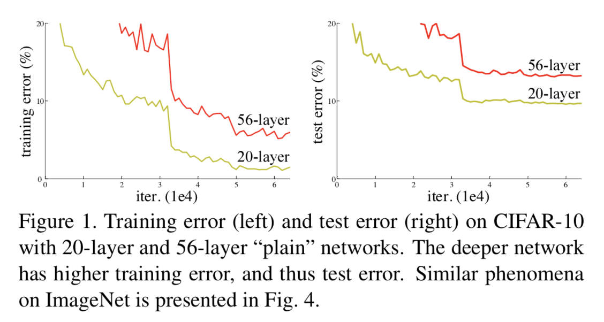
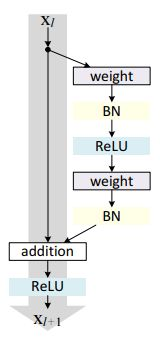
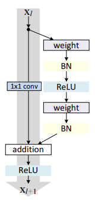
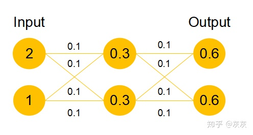
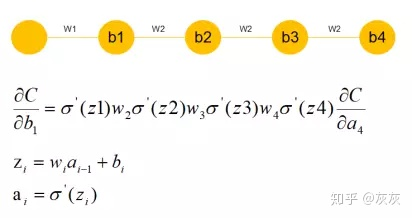
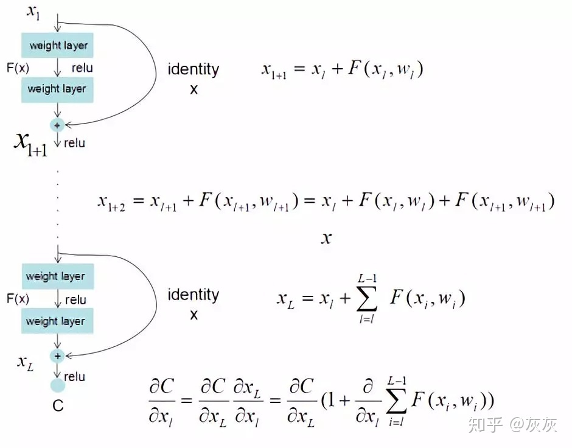

ResNet¶
论文地址： Deep Residual Learning for Image Recognition
深层网络训练瓶颈：梯度消失，网络退化
深度卷积网络整合了低中高不同层次的特征，特征的层次可以靠加深网络的层次来丰富。所以我们一般倾向于使用更深 层次的网络结构，以便取得更高层次的特征。但是在使用深层次的网络结构时我们会遇到两个问题，梯度消失、梯度爆炸和网络退化。
残差网络是为了解决深度神经网络(DNN)隐藏层过多时网络退化问题而提出的。从信息论的角度讲，在前向传输的过程中，随着层数的加深， Feature Map包含的图像信息会逐渐减少，而ResNet的直接映射加入，保证了 \(l+1\) 层的网络一定比 \(l\) 层包含更多的图像信息。
- 网络退化
网络隐藏层变多时，网络的准确度达到饱和后急剧退化，并且不是由于过拟合引起的。
{kind=link}
残差¶
“残差在数理统计中是指实际观察值与估计值(拟合值)之间的差。如果回归模型正确的话，我们可以将残差看作误差的观测值。”
更准确地，假设我们想要找一个 \(x\) ，使得 \(f(x) = b\) ，给定一个 \(x\) 的估计值 \(x_{0}\) ，残差就是 \(b - f(x_{0})\) ，误差就是 \(x - x_{0}\)
残差块¶
残差网络是由一系列残差块组成的。一个残差块可以表示为：
\[x_{l+1} = x_{l} + \mathcal{F}(x_{l},W_{i})\]在卷积网络中， \(x_{l}\) 可能和 \(x_{l+1}\) 的Feature Map的数量不一致，这时候就需要用 \(1 \times 1\) 卷积进行升维或降维。此时，残差块表示为：
\[x_{l+1} = h(x_{l}) + \mathcal{F}(x_{l},W_{i})\]其中 \(h(x_{l})\) 表示对 \(x_{l}\) 进行 \(1 \times 1\) 卷积
一般，这种版本的残差块叫做resnet_v1, keras代码实现如下：
def res_block_v1(x, input_filter, output_filter): res_x = Conv2D(kernel_size=(3,3), filters=output_filter, stridess=1, padding='same')(x) res_x = BatchNormalization()(res_x) res_x = Activation('relu')(res_x) res_x = Conv2D(kernel_size(3,3), filters=output_filter, strides=1, padding='same')(res_x) res_x = BatchNormalization()(res_x) if input_filter == output_filter: identity = x else: # 需要升维或降维 identity = Conv2D(kernel_size=(1,1), filters=output_filter, strides=1, padding='same')(res_x) x = keras.layers.add([identity, res_x]) output = Activation('relu')(x) return output
残差网络¶
残差网络的搭建分为两步：
使用VGG搭建Plain VGG网络
在Plain VGG卷积网络之间插入Identity Mapping
def resnet_v1(x): x = Conv2D(kernel_size=(3,3), filters=16, strides=1, padding='same', activation='relu')(x) x = res_block_v1(x, 16, 16) x = res_block_v1(x, 16, 32) x = Flatten()(x) outputs = Dense(10, activation='softmax', kernel_initializer='he_normal')(x) return outputs
Res解决网络退化¶
假设该层是冗余的，要想让该冗余层能够恒等映射，学习 \(h(x) = F(x)+x\) 要比学习 \(h(x) = x\) 要简单，前者只需学习残差项 \(F(x) = 0\), 因为每层网络中的参数初始化偏向于0，这项在相比于更新该网络层的参数来学习 \(h(x) = x\) ，该冗余层学习 \(F(x) = 0\) 的更新参数能更快收敛，如图所示 2：

这样当网络自行决定了哪些层为冗余层后，通过学习残差 \(F(x) = 0\) 来让该层网络恒等映射上一层的输入，使得有了这些冗余层的网络效果与没有这些冗余层的网络效果相同， 这样很大程度上解决了网络退化问题。
Res解决梯度消失或爆炸¶
在深度网络中，由于参数初始化一般更靠近0，这样在训练过程中更新浅层网络参数时，很容易随着网络的深入导致梯度消失。

可以看到，假设现在需要更新 \(b_{1}\) , \(w_{2}, w_{3}, w_{4}\) 参数因为随机初始化偏向于0，通过链式求导我们会发现， \(w_{4}, w_{3}, w_{2}\) 相乘会得到更接近于0的数，那么所求的 \(b_{1}\) 的梯度就接近于0，也就产生了梯度消失的现象。
ResNet最终更新某一个节点的参数时，由于 \(h(x) = F(x)+x\) ，由于链式求导后的结果如图所是，不管括号内右边部分的求导参数有多小，因为左边1的存在， 将原来链式求导中的连乘变成了连加状态，都能保证该节点参数更新不会发生梯度消失或梯度爆炸现象。
